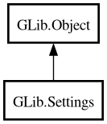

Settings
Object Hierarchy:

Description:
[
CCode ( type_id =
"g_settings_get_type ()" ) ]
public class Settings :
Object
Content:
Properties:
Static methods:
Creation methods:
Methods:
- public void @get (string key, string format, ...)
- public bool @set (string key, string format, ...)
- public void apply ()
- public void bind (string key, Object object, string property, SettingsBindFlags flags)
- public void bind_with_mapping (string key, Object object, string property, SettingsBindFlags flags, SettingsBindGetMappingShared get_mapping, SettingsBindSetMappingShared set_mapping, void* user_data, DestroyNotify? notify)
- public void bind_writable (string key, Object object, string property, bool inverted)
- public Action create_action (string key)
- public void delay ()
- public bool get_boolean (string key)
- public Settings get_child (string name)
- public Variant? get_default_value (string key)
- public double get_double (string key)
- public int get_enum (string key)
- public uint get_flags (string key)
- public bool get_has_unapplied ()
- public int get_int (string key)
- public int64 get_int64 (string key)
- public void* get_mapped (string key, SettingsGetMapping mapping)
- public Variant get_range (string key)
- public string get_string (string key)
- public string[] get_strv (string key)
- public uint get_uint (string key)
- public uint64 get_uint64 (string key)
- public Variant? get_user_value (string key)
- public Variant get_value (string key)
- public bool is_writable (string name)
- public string[] list_children ()
- public string[] list_keys ()
- public bool range_check (string key, Variant value)
- public void reset (string key)
- public void revert ()
- public bool set_boolean (string key, bool value)
- public bool set_double (string key, double value)
- public bool set_enum (string key, int value)
- public bool set_flags (string key, uint value)
- public bool set_int (string key, int value)
- public bool set_int64 (string key, int64 value)
- public bool set_string (string key, string value)
- public bool set_strv (string key, string[]? value)
- public bool set_uint (string key, uint value)
- public bool set_uint64 (string key, uint64 value)
- public bool set_value (string key, Variant value)
Signals:
Inherited Members:
All known members inherited from class GLib.Object